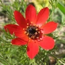

Plant Grimoire

Adonis RoseScientific Name
Safety & Uses
Gender
Also called
Pheasant's Eye, Rose of Adonis, Blooddrops, Red Chamomile, Adonis Annua
Entities1
Meaning When Gifted
When the Adonis rose, also called pheasant's eye, is gifted it carries the meaning of sorrowful memories.
USDA Hardiness Zone for Adonis annua sourced from Royal Horticultural Society Plant Finder and the Missouri Botanical Garden Plant Finder.